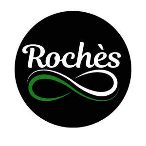

Trade Mark Journal No.2026/010 6 March 2026
UK00004338827 10 February 2026 (3,35)

- Class 3
- Body butter; Hair and body wash; Hand and body butter; Body and facial butters; Body butters; Body cream; Body lotion; Body shampoos; Body and facial oils; Hair lotion; Moisture body lotion; Body milk; Wax strips for removing body hair; Body lotions; Hair cream; Body cream soap; Body creams; Body oils; Hair lotions; Body oil; Hair oils; Face and body lotions; Moisturizing body lotions; Body moisturisers; Body powder; Body mask cream; Hair oil; Hair balm; Hair styling lotions; Body and facial creams [cosmetics]; Body oil spray; Body mask lotion; Body spray; Hair moisturisers; Body massage oils; Body and facial gels [cosmetics]; Hair wax; Face and body creams; Hair moisturizers; Body soap; Toning lotion, for the face, body and hands; Body oils [for cosmetic use]; Body soufflé; Hair mousse; Hair creams; Scented body creams; Body deodorants; Body glitter; Body sprays; Lotions for face and body care; Body oil [for cosmetic use]; Make-up for the face and body; Baby hair conditioner; Hair liquid; Body wash; Body scrub; Scented body lotions; Colouring lotions for the hair; Shampoos for human hair; Oils for hair conditioning; Hair powder; Moisturising body lotion [cosmetic]; Body milks; Body creams [cosmetics]; Hair balms; Hair removing cream; Deodorants for body care; Hair spray; Hair shampoo; Body powder (Non-medicated -); Hair care lotions; Baby body milks; Body mist; Scented body spray; Body scrubs; Body gels; Face and body glitter; Hair gel; Body cream for cosmetic use; Body washes; Hair conditioner; Body mask powder; Scented body lotions and creams; Beauty creams for body care; Body gels [cosmetics]; Body polish; Creams (Non-medicated -) for the body; Hair liquids; Cosmetic body mud; Hair styling gel; Hair sprays; Make-up preparations for the face and body; Non-medicated body soaks; Hair styling spray; Hair emollients; Hair pomades; Hair serums; Cosmetic hair lotions; Non-medicated hair lotions; Body emulsions; Hair shampoos; Hair cosmetics; Body cleansing foams; Cakes of soap for body washing; Hair glaze; Hair dye; Hair strengthening treatment lotions; Body sprays [non-medicated]; Hair styling waxes; Styling sprays for the hair; Hair nourishers; Hair care creams; Hair care serum; Facial butters; Body firming creams; Non-medicated balm for hair; Hair protection lotions; Hair lacquer.
- Class 35
- Retail services in relation to hair products.
Rochelle A McKenzie